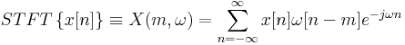
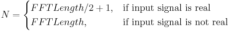
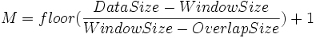

Nicht-stationäre Signale sind Signale, deren statistische Eigenschaften über die Zeit schwanken. Die klassische Fourier-Transformation eignet nicht sehr zum Analysieren dieser Art von Signalen, da sie keine Informationen darüber bietet, wie die Frequenz sich über die Zeit ändert. Daher sollte stattdessen eine Zeit-Frequenz-Analyse wie STFT verwendet werden.
STFT, das Akronym für Short-Time-Fourier-Transformation, ist eine Analysemethode, die zum Analysieren nicht-stationärer Signale verwendet wird. Im Wesentlichen extrahiert sie mehrere Signalrahmen mit einem Fenster, das sich über die Zeit verschiebt. Wenn das Zeitfenster ausreichend eng ist, kann jeder extrahierte Rahmen als stationär betrachtet werden, so dass die Fourier-Transformation verwendet werden kann. Mit einem sich entlang der Zeitachse bewegenden Fenster kann das Verhältnis zwischen Frequenz- und Zeitvarianz identifiziert werden.
Eine für die Sequenz {ix(n)} durchgeführte STFT kann als

definiert werden, wobei w(n) das Schiebefenster repräsentiert, das die lokalen Frequenzkomponenten in ihm hervorhebt.
Das Ergebnis der STFT ist eine Matrix, die N Zeilen und M Spalten hat, wobei

und

Das gewählte Fenster kann die Analyse beeinträchtigen. Anwender sollten auf die Größe und Form des Fensters achten.
Die Größe des Fensters ist mit der Zeit- und Frequenzauflösung der STFT verbunden. Je kürzer das Fenster ist, desto höher ist die Zeitauflösung. Dies wird jedoch normalerweise von einer schwachen Frequenzauflösung begleitet. Bei einem langen Fenster ist die Frequenzauflösung hoch, aber die Zeitauflösung gering. Dieses Phänomenon spiegelt das Unschärfeprinzip von Heisenberg wieder.
Unterschiedliche Formen des Fensters ergeben verschiedene Ergebnisse, und Origin bietet bis zu 9 unterschiedliche Fenster, um spezifische Anforderungen zu erfüllen.
Es ist wichtig, die richtige Größe überlappender Abschnitte für Fenster zu wählen. Eine Überlappungsgröße, die nicht Null ist, hilft z.B. normalerweise dabei, Änderungen zwischen nebeneinander liegenden Datenrahmen zu erkennen. Sie benötigt jedoch eine höhere Berechnungszeit. Die Überlappungsgröße ist ebenfalls mit der Größe der STFT-Ergebnismatrix verbunden.
Wenn die Größe der FFT-Abschnitte größer ist als die Größe der Fenster, werden Nullen an beiden Seiten von jedem Fenster-Datensegment aufgefüllt. Dies erhöht im Allgemeinen die Frequenzauflösung.
Wenn ein Bilddiagramm aus dem Ergebnis gezeichnet wird, können Sie deutlicher sehen, wie sich die Frequenz über die Zeit ändert.
Bitte beachten Sie, dass der Nutzen der STFT beschränkt ist, da es sich um eine feste Auflösungsmethode handelt. Analysen mit mehreren Auflösungen wie Wavelet-Transformationen sollten durchgeführt werden, um die Signalanalyse für einige Anwendungen zu verbessern.
Um STFT zu verwenden: